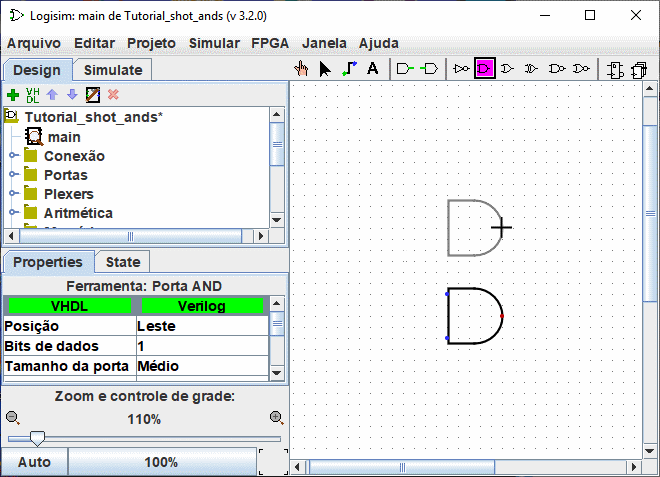
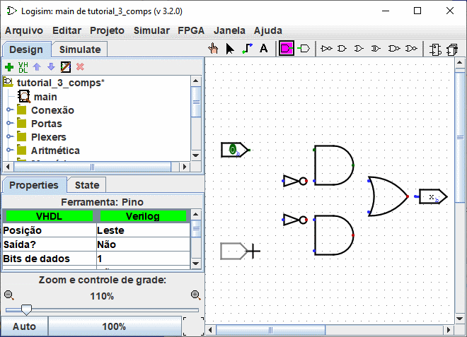

Anterior: Passo 0: Orientar-se
Passo 1: Acrescentar portas
Lembre-se que estamos tentando construir o circuito a seguir em Logisim.

Sugiro a construção de um circuito, inserindo as portas primeiro para formar uma espécie de esqueleto e, em seguida, conectá-los com os fios. A primeira coisa que vamos fazer é adicionar as duas portas AND. Clicar na porta AND na barra de ferramentas ( , a penúltima listada). Em seguida, clicar na área de edição onde você desejar que a primeira porta AND deva ficar. Certifique-se de deixar espaço suficiente para outras coisas do lado esquerdo. Em seguida, clicar na porta AND novamente e colocar a segunda mais abaixo.
, a penúltima listada). Em seguida, clicar na área de edição onde você desejar que a primeira porta AND deva ficar. Certifique-se de deixar espaço suficiente para outras coisas do lado esquerdo. Em seguida, clicar na porta AND novamente e colocar a segunda mais abaixo.

Observar que haverá cinco pontos do lado esquerdo da porta AND. Esses serão os pontos onde os fios poderão ser conectados. Acontece que nós iremos usar apenas dois deles para o nosso circuito XOR, mas para outros circuitos, você poderá achar mais útil ter mais de duas conexões em uma porta AND.
Agora adicionaremos as outras portas. Primeiro clicar sobre a porta "OR" ( ); em seguida, clicar onde você quiser colocá-la. E colocar também duas portas NOT" usando a ferramenta (
); em seguida, clicar onde você quiser colocá-la. E colocar também duas portas NOT" usando a ferramenta ( ).
).

Deixei um pouco de espaço entre as portas NOT e as portas AND, se você quisero, porém, poderá colocá-las umas junto às outrss e poupar o esforço de conectá-las por um fio mais tarde.
Agora queremos adicionar as duas entradas x e y no diagrama. Usando as ferramentas "Entrada" ( ) palce um pino de entrada , e coloque os pinos voltados para baixo. Você também deverá colocar uma saída junto à porta OR, usando as ferramentas de "Saída" (
) palce um pino de entrada , e coloque os pinos voltados para baixo. Você também deverá colocar uma saída junto à porta OR, usando as ferramentas de "Saída" ( ). (Novamente, estou deixando um pouco de espaço entre a porta OR e a saída, mas você poderá optar por colocá-las uma ao lado da outra.)
). (Novamente, estou deixando um pouco de espaço entre a porta OR e a saída, mas você poderá optar por colocá-las uma ao lado da outra.)

Se você achar que não gosta de onde colocou alguma coisa, poderá selecioná-la usando a ferramenta "Editar" ( ) e arrastá-la para o local desejado. Ou ainda poderá excluí-la totalmente, selecionando o menu | Editar |→| Excluir | ou pressionar a tecla Delete ou de novo Ctrl-X.
) e arrastá-la para o local desejado. Ou ainda poderá excluí-la totalmente, selecionando o menu | Editar |→| Excluir | ou pressionar a tecla Delete ou de novo Ctrl-X.
Quando você colocar cada componente do circuito, você verá que, logo que ele for colocado, o Logisim reverte para a ferramenta "Editar" para que possa mover o componente recém-colocado ou (como veremos em breve) conectar o componente a outros, usando fios. Se quiser acrescentar uma cópia do recém-colocado componente, um atalho é pressionar Ctrl-D para duplicar a seleção. (Alguns computadores usam outra teclas para menus, tais como a tecla de comando no Macintosh. Você irá pressionar essa tecla junto com a tecla D).
Próximo: Passo 2: Acrescentar conexões